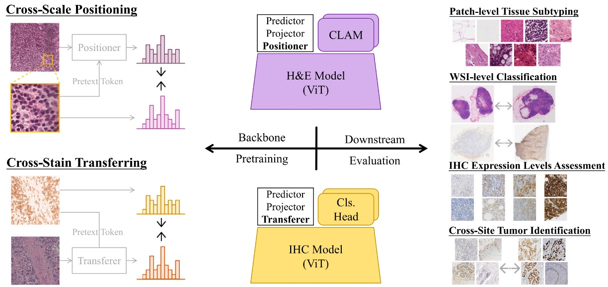
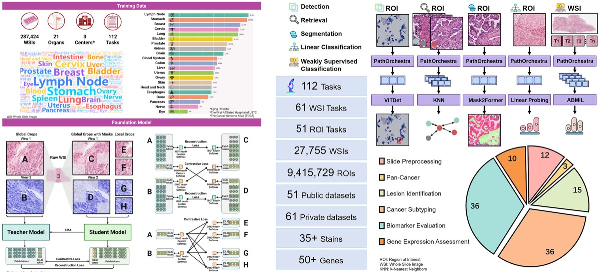
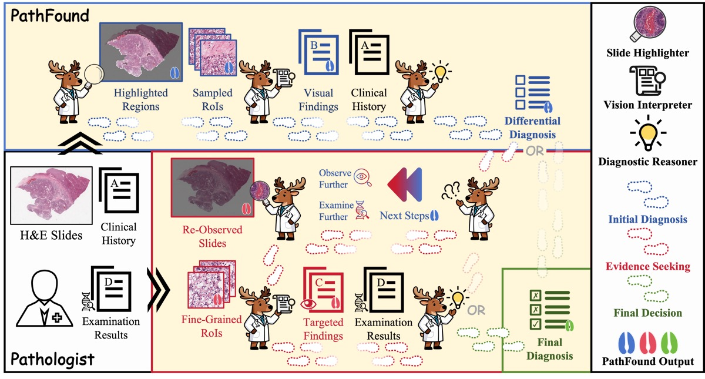
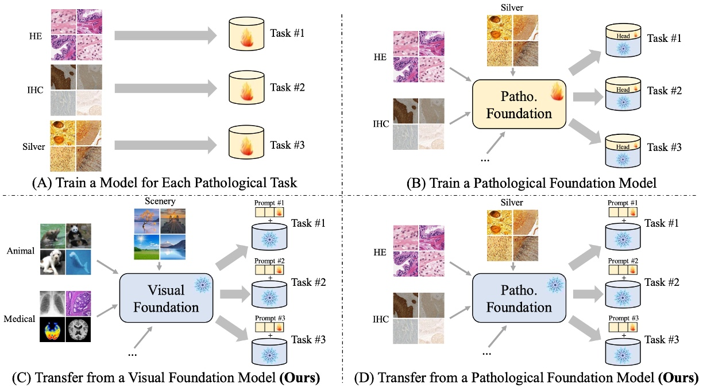
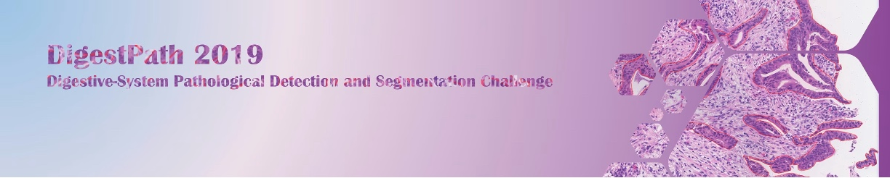
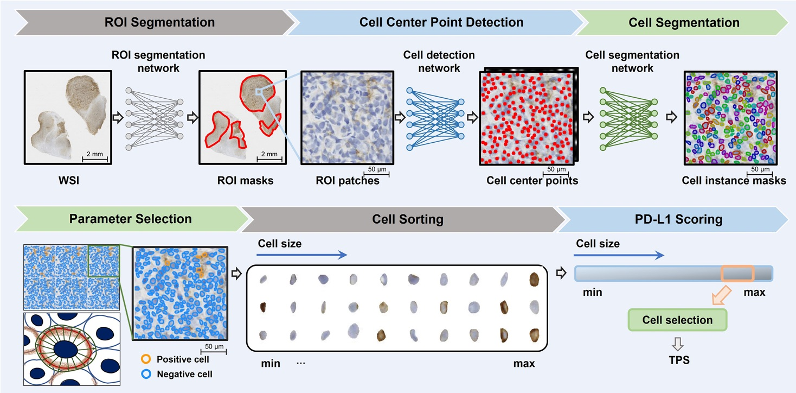
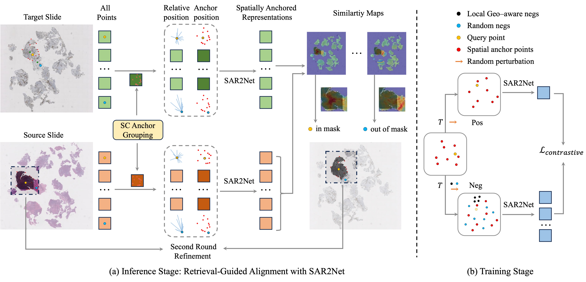

✦ Multi-stain Pathology Image Analysis Pathology
Pathology remains the gold standard for cancer diagnosis, yet manual slide analysis is time-consuming and subject to inter-observer variability — making it one of the most impactful areas for AI assistance in medicine. Our work spans the full stack of computational pathology: from foundation models pretrained across H&E and IHC stains (PathoDuet, PathOrchestra) to agentic diagnostic systems (PathFound) and efficient adaptation methods (PathoTune). On the application side, we built benchmarks for digestive-system lesion detection (DigestPath) and deployed AI systems for PD-L1 scoring and cross-stain WSI alignment in real clinical settings.

Foundation Models

PathoDuet: Foundation Models for Pathological Slide Analysis of H&E and IHC Stains
A dual-encoder foundation model pretrained across H&E and IHC stains using a novel cross-stain pretext task, enabling strong transfer to patch-level and slide-level tasks without stain-specific finetuning.

A large-scale pathology foundation model pretrained on millions of slides, covering over 100 clinical-grade tasks across diverse tissue types and staining protocols. Achieves state-of-the-art on both patch-level and slide-level benchmarks.

PathFound: An Agentic Multimodal Model Activating Evidence-seeking Pathological Diagnosis
An agentic diagnostic model that actively seeks evidence across whole-slide images, iteratively selecting informative regions and integrating multimodal cues to produce interpretable pathological diagnoses.

PathoTune: Adapting Visual Foundation Model to Pathological Specialists
A parameter-efficient finetuning framework that adapts general visual foundation models to pathology-specific tasks, bridging the domain gap between natural images and histological stains with minimal labeled data.
Benchmarks

A large-scale benchmark for pathological lesion detection and segmentation in the digestive system, introduced alongside a public challenge. Covers colonoscopy and gastric tissue with pixel-level annotations from expert pathologists. · Challenge page
Applications

Artificial Intelligence-based Assessment of PD-L1 Expression in Diffuse Large B Cell Lymphoma
An AI pipeline for automated PD-L1 scoring in DLBCL IHC slides, achieving pathologist-level agreement and enabling scalable immunotherapy biomarker assessment across large patient cohorts.

SAR2Net: Learning Spatially Anchored Representations for Retrieval-Guided Cross-Stain Alignment
A framework for cross-stain WSI alignment that learns spatially anchored representations and reformulates the alignment problem as region-level feature retrieval, achieving robust correspondence under severe tissue distortions without global pre-alignment.
✦ Pathology image analysis keeps surprising us with new possibilities — always happy to explore them together.